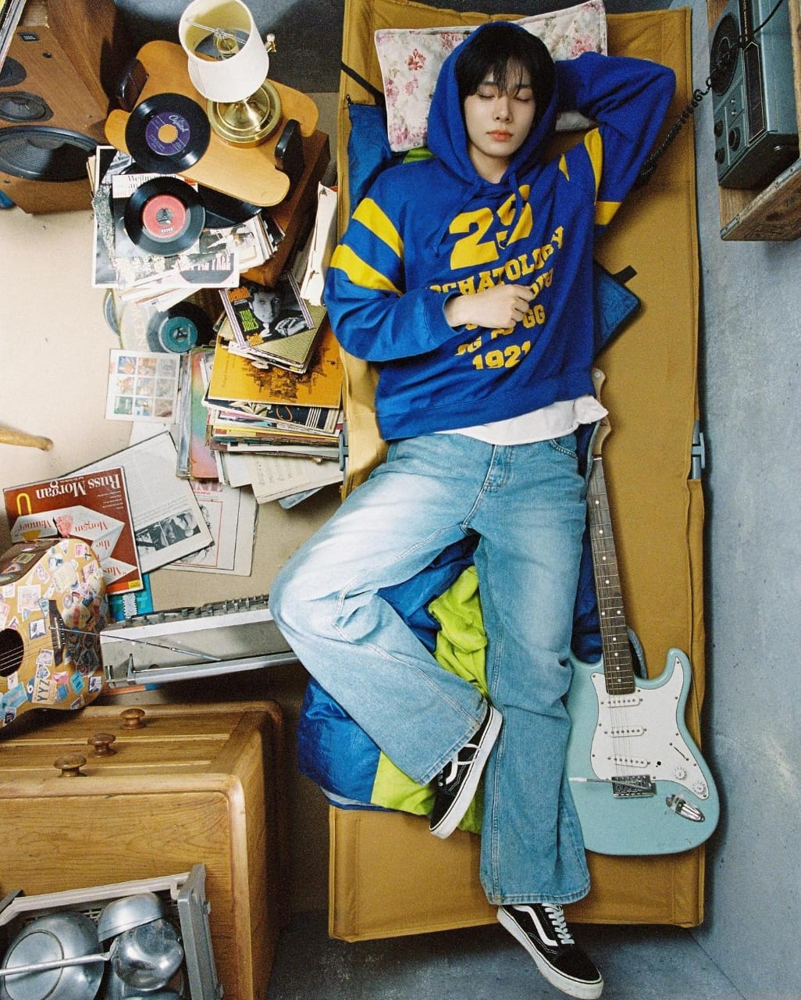
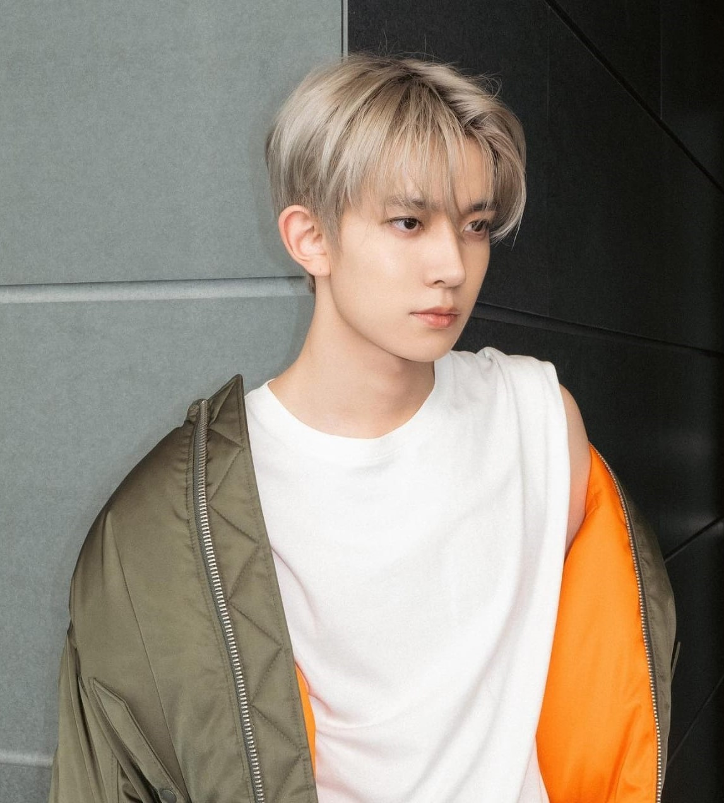

HEESUNG


Stage Name:
Heesung
Birth Name:
Lee Heesung
Date of Birth:
15th October, 2001
Birth Place:
Uiwang, Gyeonggi-do, South Korea
Nationality:
Korean
MBTI:
INTP
Zodiac Sign:
Libra
Blood group:
A
Height:
183cm
Facts about Heesung
He’s from Namyangju, Gyeonggi-do, South Korea.
He has an older brother.
Education: Gwangnam High School (graduated).
Nickname: Heedeung.
He, Jay, Sunghoon and Jungwon were trainees under Big Hit Entertainment.
He is close to TXT as he trained with them.
He trained for three years and one month before taking part in I-LAND.
He earned fifth place in the final of I-LAND (1,137,323 votes).
He performed NCT U‘s Boss in the first episode of I-LAND.
The other members thought he was really talented when they first met him.
His role model is his father.
He used to prepare for a foreign language high school. As a result, his English is quite good.
He already has some experience with songwriting and composing.
He has good vocal skills.
Heeseung has perfect pitch. (Weekly Idol Ep. 491)
His charming points are his eyes and his vocal line.
His favorite colors are purple and ivory.
His favorite seasons are winter and spring.
His favorite song is “Night Flight” by Yerin Baek.
His favorite ice-cream flavor is Rainbow Sherbet.
He likes basketball.
He enjoys playing games.
If he had to choose three words to describe himself, he’d pick “creativity”, “adaptability” and “growth”.
He said a character that is similar to him is ‘Bambi’.
He started dreaming to become a singer when he was 6.
Heeseung is considered the ace of the group by both the members and the fandom.
Heeseung has perfect pitch (Weekly Idol Ep. 491).
Heeseung said he’s close with Jaehyuk from Treasure during a fansign call.
He is in a friend group called 이즈 (ee-z) with Stray Kids I.N, TXT Beomgyu and Just B Lim Jimin. (Beomgyu’s vLive – Dec 2, 2021).
He can play the piano.
He is credited for Vocal Arrangements and also Background Vocals along with Jake on their title track “Bite Me” from “Dark Blood” Album.